حمید لسان، منطقدانی زنده
 امیر اصغری
امیر اصغری
حمید لسان را نخستینبار، کاملاً تصادفی و در یکی از ولگردیهای تاریخیام، در نوشتهای با عنوان «سمینار فلسفه، منطق و روششناسی ریاضی» کشف کردم («سمینار فلسفه، منطق و روششناسی ریاضی»، هدهد، ۱۳۶۰). اولین واکنشم، طبق معمولِ خودم در نخستین برخورد با تاریخ آدمهای ریاضی ایران در نیمقرن گذشته، پرسیدن از سیاوش شهشهانی بود:
سیاوش جان، سلام
حمید لسان را تازه کشف کردهام و تصمیم دارم «حمید لسان کیست؟» را بنویسم، ولی هیچی از او پیدا نمیکنم. تنها اطلاعات بهدردبخوری که یافتم این بود که در سال ۱۳۵۹ در سمیناری دربارۀ منطق، فلسفه و روششناسی ریاضی ــ که اتفاقاً شما هم در آن ارائه داشتهاید ــ سخنرانی کرده است. فکر کردم شاید ایدهای داشته باشید که او کیست.
(«حمید لسان کیست؟» قرار بود برای مجموعهای با عنوان کلی «او کیست؟» نوشته شود؛ مجموعهای دربارۀ زندگی و کار آدمهای ریاضیاتِ ایران در دورۀ جدید.)
سیاوش در پاسخ نوشت:
«متأسفانه او در سن نسبتاً جوانی بر اثر سکته درگذشت. تقریباً کل اطلاعاتی که دربارۀ او یافت شد، در شمارهای بهنسبت اخیر از خبرنامۀ آیپیام، در نوشتهای از آقای کاظمی دربارۀ سمینار سهشنبه، آمده است. او آدمی خیلی دوستداشتنی بود و یکی از چهار آغازکنندۀ آن سمینار بود.» سیاوش شهشهانی
کل اطلاعات
آنچه در خبرنامه آمده است («حمید لسان»، خبرنامۀ آیپیام، ۱۳۹۷)، برگرفته از نوشتۀ جورج مایکل ویلمرز، استاد راهنمای دورۀ دکتری حمید، است (ویلمرز، ۲۰۱۳). متن اصلی ویلمرز دو صفحه است و، اگرچه کموبیش درست است، به یک اشتباه فاحش نیز آغشته است که بهزودی خواهیم دید. متن خبرنامه از آن برگرفته شده و حدود یک ستون و چند خط اضافه از صفحهای دو ستونی را پر میکند. در این برگرفتن، چیزهایی از متن اصلی حذف و اشتباهاتی به آن اضافه شده است؛ مثلاً از «جان ویلمرز» بهجای جورج ویلمرز تشکر شده است. پیشینههایی نیز نادیده گرفته شدهاند؛ از جمله اینکه متن ویلمرز به مناسبت انتشار رسالۀ دکتری حمید، سیوپنج سال پس از نگارش آن، در سال ۲۰۱۳ نوشته شده بود. متن ویلمرز و خبرنامه هر دو پیوست این نوشتهاند. خلاصۀ مشترک این دو متن چنین است:
حمید لسان در سال ۱۳۳۰ در کاشان به دنیا آمد. در سال ۱۳۵۰ وارد دورۀ کارشناسی ریاضی دانشگاه منچستر شد و در سال ۱۳۵۳ با درجۀ ممتاز فارغالتحصیل شد. در دورۀ کارشناسی، از طریق درسهای پیشرفته، با منطق ریاضی آشنا شد. چهار سال دیگر در بخش ریاضی دانشگاه منچستر ماند و نخست مدرک کارشناسی ارشد و سپس دکتری گرفت. رسالۀ دکتری او با عنوان Models of Arithmetic («مدلهای حساب»)، زیر نظر جورج مایکل ویلمرز نوشته شد.
او در دورۀ تحصیلات تکمیلی عضو گروه دانشجویان منطق دانشگاه منچستر بود.
شوخطبعی، علایق فرهنگی گسترده و شور و اشتیاق سرایتکنندۀ حمید سهم بزرگی در انسجام گروه و تعامل آن با اعضای نسبتاً جوان هیئت علمی منطق داشت.
جورج ویلمرزحمید در سال ۱۳۵۵ با لیندا ازدواج کرد و در بهار ۱۳۵۷، همراه همسر و دختر نوزادشان، به ایران بازگشت. در دو سال بعد، بهعنوان مدرس موقت در کاشان و تهران کار کرد. با آغاز جنگ ایران و عراق، خانواده به انگلستان بازگشت. تحصیل حمید در انگلستان با بورس دولت ایران تأمین شده بود و در برابر هفت سال بورس، چهارده سال تعهد خدمت در ایران داشت. پس از بازگشت به انگلستان، برای تسویۀ بدهی بورس دوازده هزار پوند قرض کرد. این بدهی، کمبود فرصتهای دانشگاهی و ضرورت تأمین زندگی خانواده باعث شد کار دانشگاهی را ادامه ندهد. پس از آن در زمینۀ طراحی نرمافزار و سامانههای ایمنیحیاتی کار کرد و در طرحهایی از جمله خط ریلی تونل مانش و ایرباس اروپا مشارکت داشت. حمید لسان پس از چند سال بیماری، در مرداد ۱۳۸۵ درگذشت.
هرچند حمید لسان پس از خاتمۀ دورۀ دکتری تحقیقات خود در منطق را ادامه نداد، ولی تحقیقات پیشگامانهاش در همان رسالۀ دکتری دربارۀ ساختار تعریفپذیری در مدلهای نااستاندارد حساب، اصالت و تأثیر زیادی داشته و بسیاری از ایدههای اساسی او جزو فرهنگ عمومی این رشته درآمده و سنگبنای پژوهشهای بعدی را فراهم کرده است.
اگر این «کل اطلاعات» برای شما کافی است، میتوانید ادامۀ متن را نخوانید. برای من کافی نبود و دلیل نوشتن ادامۀ این متن نیز همین است.
برای من، از همان جملۀ اول سیاوش شهشهانی، «او آدمی خیلی دوستداشتنی بود»، حمید لسان به یکی از آن آدمهایی تبدیل شد که انگلیسیها دربارهشان میگویند Larger than life. شهشهانی، بهجای اینکه مثلاً بنویسد حمید خیلی باسواد بود ــ اگرچه این را هم جای دیگری گفته است (شهشهانی، مصاحبۀ تاریخ شفاهی، ص. ۸) ــ یا دکترایش را نزد یک منطقدان خیلی خفن گرفته بود، یا غیره و غیره، نوشته بود: «او آدمی خیلی دوستداشتنی بود».
برای همین دوست داشتم او را بشناسم و در سفر کوتاه او، از تولد تا مرگ، همراهش باشم. این نوشتهای که میخوانید نتیجۀ این تلاش است و چون ترجمۀ مناسبی برای Larger than life نیافتم، از «منطقدانی زنده» استفاده کردم.
برای نوشتن آن از خانوادۀ او در ایران، عمدتاً از پسران برادرانش، و از همسر او، لیندا، کمک گرفتهام؛ لیندا همچنان در انگلستان و در همان روستایی زندگی میکند که با حمید در آن زندگی میکرد. همۀ عکسهای حمید از مجموعۀ متعلق به لیندا است. علاوه بر این، مدیون خاطرات شخصی سیاوش شهشهانی و نیز آرشیو دانشگاه منچستر هستم.
نوزده سال اول
حمید در سال ۱۳۳۰ به دنیا آمد. پدرش، دکتر حسین لسان، استاد دانشکدۀ هنرهای دراماتیک و دانشکدۀ ادبیات دانشگاه تهران بود؛ عنوان و وابستگی دانشگاهی او را میتوان زیر مقالههای متعددش دربارۀ اسطورهشناسی در دهۀ ۱۳۵۰ و در مجلههایی چون یغما و هنر و مردم دید. حسین لسان در سال ۱۳۶۹، در مسیر رفتن به کلاس درس، درگذشت.
علی دهباشی مینویسد که هنگام خاکسپاری او:
«کاشان یکپارچه غرق گریه و اندوه بود. بازار و بسیاری از مؤسسات تعطیل شده بود. همشهریان استاد که به وجود او افتخار میکردند، در آیین خاکسپاری او احترام خود را به دانش و فضیلت نشان دادند.»
دهباشی، ۱۳۶۹حسین لسان اهل کاشان بود. او بنا بر خاطرات دکتر علی شیخالاسلامی، یکی از همدورهایهایش، در سال ۱۳۴۹ در آزمون استادیاری دانشگاه تهران پذیرفته شد (شیخالاسلامی، خبرآنلاین). این همان سالی است که حمید ایران را برای ادامۀ تحصیل در انگلستان ترک کرد. مسیر حسین لسان از کاشان به تهران، خود را در مدرسههایی که حمید در آنها تحصیل کرده است بازتاب میدهد؛ نام این مدرسهها را مدیون خانوادۀ حمید در ایران هستم:
- دبستان حکمتِ گریچه، کاشان — اکنون اثری از آن باقی نمانده است.
- دبستان کامکار، قم — حمید در دورهای در این مدرسه درس خواند که حسین لسان، میان سالهای ۱۳۴۰ تا ۱۳۴۲، مسئول فرهنگ یا آموزشوپرورش قم بود.
- دبیرستان پهلوی، کاشان — همان دبیرستانی که سهراب سپهری چند سال پیشتر از آن فارغالتحصیل شده بود.
- دبیرستان محمدعلی فروغی، نظامآباد تهران — دبیرستانی بزرگ و پرجمعیت که ساختمانش بعدها از میان رفت و جای آن را خانههای مسکونی گرفت (آزاد ارمکی، یادداشت دبیرستان فروغی).
- دورۀ دوم دبیرستان خوارزمی شمارۀ ۲، میدان بهارستان تهران — مدرسهای که نام پرویز شهریاری با آن گره خورده است.
حتی اگر هیچ چیز دیگری از حمید نمیدانستیم، نگاهی به عنوان نوشتههای حسین لسان نشانهای بود بر آنچه ویلمرز «علایق فرهنگی بسیار گسترده» حمید مینامد؛ برای مثال:
«قربانی، از روزگار کهن تا امروز: روایات دینی مراسم قربانی در میان ملل و اقوام باستانی» و «شاهنامه، حماسهای برتر از ایلیاد» (لسان، حسین؛ یغما و هنر و مردم).
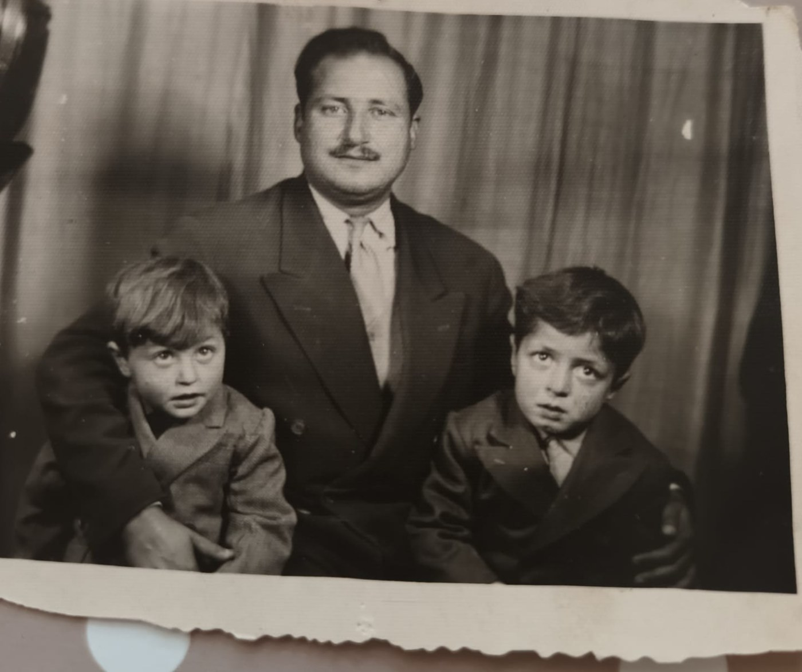
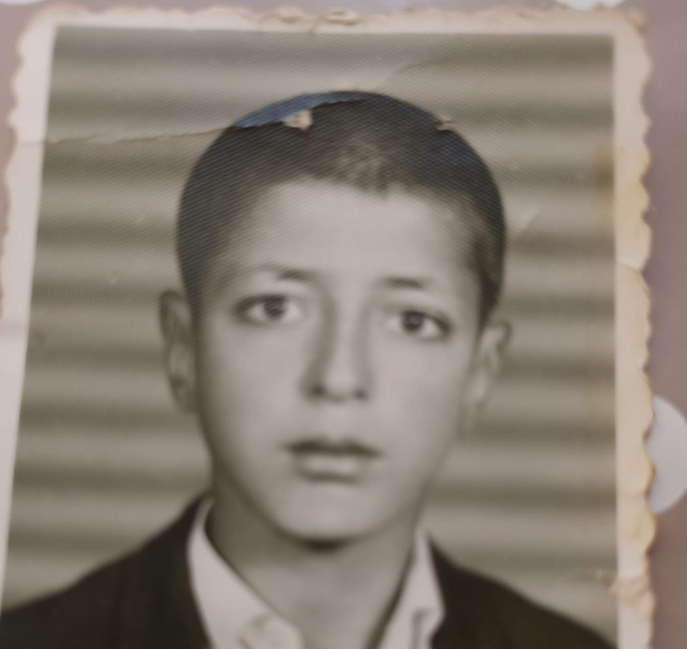
به هر حال، حمید پسر آن پدر بود. اما پسر چنین پدری بودن احتمالاً فرصت شکلدادن دوستیهای عمیق در دوران مدرسه را از او گرفته بود. به دلیل جابهجاییهای پدر، بیشترین زمانی که حمید در یک مدرسه گذراند همان چهار سال نخست دورۀ ابتدایی بود؛ پس از آن از مدرسهای به مدرسۀ دیگر رفت، بیآنکه فرصت کافی برای دوستی عمیق پیدا کند. همچنان که بعداً خواهیم دید، این با زندگی خود حمید بهعنوان پدر کاملاً متفاوت بود.
حسین لسان مرد ادب بود. حمید فرزند اول خانواده بود و آنچه در دل او میجوشید از جنس ادب نبود. بنابراین به نظر میرسد تغییر مدرسه از دبیرستان فروغی به خوارزمی تصمیم خود حمید بوده باشد؛ تصمیمی برای رسیدن به آنچه میخواست باشد. تقی آزاد ارمکی، جامعهشناس و یکی از فارغالتحصیلان فروغی، توصیفی بینظیر از مدرسه در آن سالها ارائه میدهد:
«دبیرستان فروغی با جمعیت دانشآموزی بسیار زیاد، سه رشتۀ ریاضی، طبیعی و ادبیات داشت. مدرسه بخشی از شهر تهران را به لحاظ اجتماعی و اقتصادی نمایندگی میکرد. بیشتر مردمی که در آن منطقه زندگی میکردند، در دو دهۀ پیش از آن، از ۱۳۲۵ تا ۱۳۴۵، به نظامآباد مهاجرت کرده و زندگی تازهای را آغاز کرده بودند. دانشآموزان به اجبار به کلاس میآمدند و معلمان به اجبار درس میدادند. بیشتر بچهها درسنخوان و بیهدف بودند؛ اصلاً شرایط درسنخواندن مهیا بود.»
تقی آزاد ارمکیخانوادۀ حمید در حوالی میدان گرگان ــ میدان نامجوی امروز ــ زندگی میکردند؛ این نشانی در پروندۀ او در آرشیو دانشگاه منچستر آمده و خانواده نیز آن را تأیید کرده است. دبیرستان فروغی کموبیش از مدرسههای نزدیک محل زندگی آنان بود. خوارزمی دورتر، اما همچنان در دسترس بود. تقریباً محال است حمید نام پرویز شهریاری را نشنیده یا از نوشتههای او استفاده نکرده باشد. حمید خود را به دبیرستان خوارزمی شمارۀ ۲ منتقل کرد. اینکه در کلاس پرویز شهریاری، که آن سالها در مدرسههای خود ریاضی درس میداد، نشسته باشد بسیار هیجانانگیز و حتی محتمل است؛ اما سندی برای آن نیافتهام. از خود دبیرستان خوارزمی شمارۀ ۲ نیز اکنون، اگر به پاساژ یا خانه تبدیل نشده باشد، مخروبهای بیش نمانده است.
حمید در سال ۱۳۴۸ دیپلم گرفت. تنها سند زندهای که تاکنون از دوران تحصیل او در ایران یافتهام، نامش در میان پذیرفتهشدگان کنکور سراسری همان سال است؛ اتفاقاً نخستین سالی که کنکور بهصورت سراسری برگزار شد (اطلاعات، ۱۶ شهریور ۱۳۴۸).
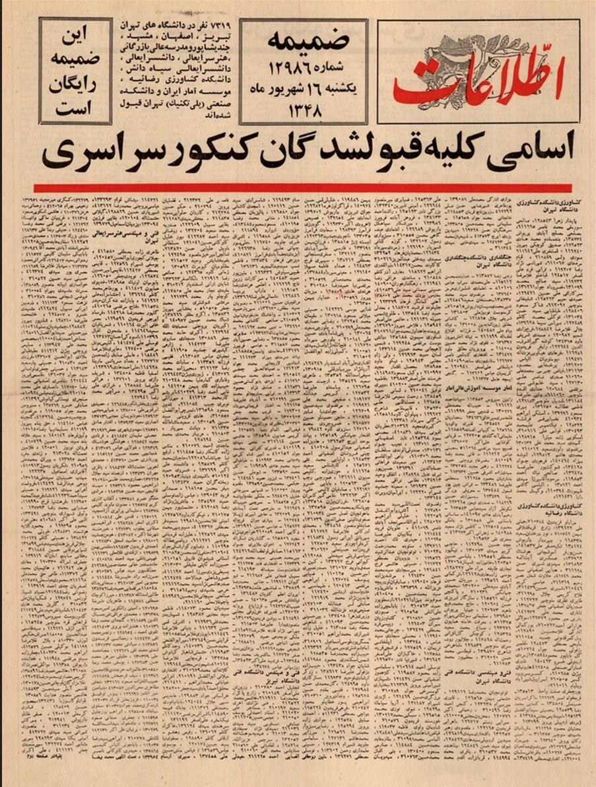
نام حمید در میان پذیرفتهشدگان رشتههای فنی و مهندسی دانشکدۀ فنی دانشگاه تهران آمده است. همانجا نام محمدرضا درفشه ــ بعدها دکتر درفشه و استاد همان دانشگاه ــ در میان پذیرفتهشدگان ریاضی دانشکدۀ علوم دیده میشود. بااینحال، حمید دانشگاه تهران را چندان تجربه نکرد و یک سال بعد ایران را به مقصد انگلستان ترک کرد.
ساواک
وقتی نام حمید لسان را به انگلیسی جستوجو میکنید، یکی از نخستین چیزهایی که مییابید یادداشت نایجل سیل است؛ یکی از همکاران حمید در بخشی از فعالیتهای غیردانشگاهیاش (سیل، ۲۰۰۸).
این یادداشت، که سیل در سال ۲۰۰۸ و پس از آگاهی از مرگ حمید نوشت، در مجموع ارزشمند است و اطلاعاتی مهم دربارۀ شخصیت و فعالیتهای حرفهای او به دست میدهد. بااینحال، در همان آغاز ادعایی مطرح میکند که با زندگی حمید سازگار نیست:
«حمید، پناهندهای ایرانی از دست ساواک، در میانۀ دهۀ ۱۹۸۰ به گروه پژوهشی هوش مصنوعی من پیوست؛ زمانی که همه در استیال هارلو کار میکردیم.»
نایجل سیل، ۲۰۰۸در سال ۱۹۸۰ کسی نمیتوانسته است از ساواک فرار کند، چون ساواک دیگر وجود نداشته است! تنها احتمال برخورد حمید با ساواک در سال ۱۳۴۸ بوده است که او وارد دانشگاه تهران شد و همان سال به خاطر بالارفتن قیمت اتوبوس، دانشجویان اعتراض کردند و ساواک دخالت کرد و تعدادی از آنها را بازداشت کرد و البته بعد از چهار روز آزاد کرد. هیچ فهرستی از افراد بازداشتشده وجود ندارد ولی خیلی بعید است که حمید جزو آنها بوده باشد. دورههای مدرسۀ او، بهخصوص انتقالش از دبیرستان محمدعلی فروغی به دبیرستان خوارزمی، این حدس را تقویت میکند که او بیشتر به فکر درس بوده است تا فعالیتهای اجتماعی (آن هم از گونۀ انقلابی آن). او در سال ۱۳۴۹ پذیرش گرفت و برای تحصیل به انگلستان رفت. پدرش نیز تقریباً در همان دوره در آزمون استادیاری دانشگاه تهران پذیرفته شد. هیچیک از اینها برای آدمی که ساواک با او مشکل داشته است امکانپذیر نبوده است. مهمتر از همه، هم خانوادۀ حمید در ایران و هم همسرش، لیندا، روایت فرار او از ساواک را صریحاً رد کردهاند. تنها توضیح باقیمانده این است که نایجل سیل، بیش از دو دهه پس از همکاریاش با حمید و در یادداشتی که به مناسبت مرگ او نوشته بود، بخشی از گفتههای حمید دربارۀ فضای سیاسی ایران را با زندگی شخصی او درآمیخته باشد.
اعزام
چهارشنبه دهم تیرماه ۱۳۴۹، در صفحۀ اول روزنامۀ اطلاعات، آگهیای از بانک مرکزی ایران با عنوان «آگهی اعزام محصل به خارج» منتشر شد.
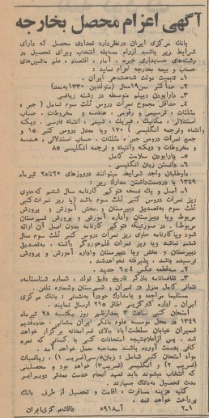
در این آگهی از متولدین سال ۱۳۳۰ به بعد که سابقۀ تحصیلی خوبی داشتند دعوت شده بود مدارک خود را برای شرکت در آزمونی بفرستند که هجده روز بعد، در ۲۸ تیرماه ۱۳۴۹، برگزار میشد.
هدف آزمون، انتخاب و اعزام دانشجو به خارج از کشور برای تحصیل در رشتههای حسابداری خبره، آمار، اقتصاد، علم ماشینهای حساب و بیمه بود. همانجا نیز ذکر شده بود کسانی که انتخاب میشوند باید تعهد بسپارند پس از پایان تحصیل، به مدتی دوبرابر زمان تحصیل خود برای بانک خدمت کنند. تمام هزینههای مسافرت، اقامت و تحصیل نیز از سوی بانک پرداخت میشد.
معمول چنین آگهیهایی این بود که دستکم در دو یا سه شمارۀ پیاپی روزنامه منتشر شوند. عجیب است که این آگهی، تا آنجا که من یافتهام، تنها یک بار منتشر شده است. به هر حال، حمید به نحوی از این فرصت باخبر شد.
مواد امتحانی برای او نباید چندان دشوار بوده باشند: زبان فارسی با ضریب یک، ریاضیات با ضریب دو و زبان انگلیسی با ضریب سه. کسانی که نمرۀ کافی از آزمون کتبی به دست میآوردند، به مصاحبه دعوت میشدند.
به نظر نمیرسد اسامی پذیرفتهشدگان بهطور عمومی اعلام شده باشد؛ نویسندۀ این سطور تمام شمارههای روزنامۀ اطلاعات را تا پایان سال ۱۳۴۹ جستوجو کرده و فهرستی از پذیرفتهشدگان نیافته است. بنابراین نمیدانیم چند نفر انتخاب شدند. تنها میدانیم که حمید یکی از آنان بود.
حمید در سال ۱۳۴۹ از طریق برنامۀ اعزام بانک مرکزی به انگلستان رفت. به نظر میرسد بانک مرکزی گزینش، اعزام و امور مالی بورسیهها را بهطور متمرکز اداره میکرد، درحالیکه هر دانشجو برای تأمین نیاز یکی از سازمانها برگزیده میشد. در مورد حمید، آن سازمان بیمۀ ملی ایران بود؛ سازمانی که هزینۀ تحصیل او را تأمین میکرد و احتمالاً قرار بود پس از بازگشت محل خدمتش باشد. او در بخش سپاسگزاری رسالهاش از سازمان بیمۀ ملی ایران بهعنوان تأمینکنندۀ مالی تحصیل خود نام میبرد و از خانم O. Behrouzi در بانک مرکزی ایران برای کمک در امور مالی تشکر میکند (لسان، ۱۹۷۸، بخش سپاسگزاری).
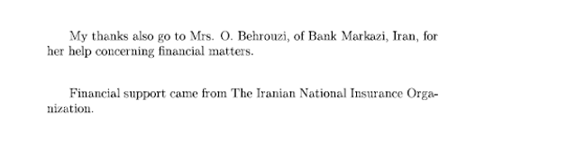
جورج ویلمرز مینویسد که حمید با بورس دولت ایران برای تحصیل در بریتانیا و آمادگی ورود به دانشگاه منچستر به انگلستان رفت. قرائن نشان میدهند که مسیر از پیش تعیینشدۀ او احتمالاً به بیمه مربوط بوده است؛ اما یک سال بعد، سر از رشتۀ ریاضی دانشگاه منچستر درآورد و سپس تا منطق پیش رفت.
همینجاست که تاریخ برای من به تاریخ آدمها تبدیل میشود. تصمیم درست یک فرد در لحظهای درست، بیآنکه آن فرد لزوماً مشهور باشد یا حتی نام کاملش را بدانیم، میتواند تأثیری عمیق بر زندگی انسانی بگذارد که برای ما مهم است. آن فرد در اینجا خانم بهروزی است.
ما حتی نام کوچک او را نمیدانیم. تنها میدانیم که با امور مالی حمید سروکار داشته و حمید، سالها بعد، لازم دیده است در رسالۀ دکتری خود از او تشکر کند. شاید او میتوانست در برابر تغییر مسیر حمید از بیمه به ریاضیات و سپس منطق فقط به مقررات اشاره کند، یا دستکم هیچ کاری برای هموارکردن این راه انجام ندهد. اما ظاهراً چنین نکرد. امیدوارم نوادگان او، یا شاید حتی خود او، روزی این نوشته را بخوانند و تشکر مرا نیز بپذیرند.
دانشگاه منچستر
حمید در سال ۱۳۴۹ به انگلستان رفت تا خود را برای ورود به دانشگاه منچستر آماده کند. از این دورۀ آمادگی چیز زیادی نمیدانیم، اما بخشی از آن در پروندۀ تحصیلیاش در آرشیو دانشگاه منچستر ثبت شده است؛ پروندهای که، بهطرزی شگفتآور، چیزی بیش از یک کارت نیست.
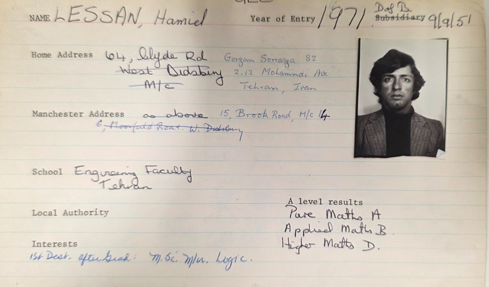
روی این کارت تاریخ تولد حمید ثبت شده است: ۱۷ شهریور ۱۳۳۰. نشانی محل زندگی او در تهران و منچستر را نیز داریم. کارت علاوه بر این نشان میدهد که حمید در سال پیش از ورود به دانشگاه در امتحانات GCE A-level شرکت کرده بود (آزمونهای تخصصی پایان دورۀ متوسطه و معیار اصلی پذیرش دانشگاه در بریتانیا). هر سه درس ثبتشده برای او از شاخههای ریاضی بودهاند. نمرههایش را نمیتوان خیرهکننده خواند، اما برای پذیرش در رشتۀ ریاضی دانشگاه منچستر کافی بودند.
حمید در سال ۱۳۵۰ تحصیل در رشتۀ ریاضی را در دانشگاه منچستر آغاز کرد. پشت همان کارت میتوان کد درسهای سه سال دورۀ کارشناسی و نمرههای او را یافت.
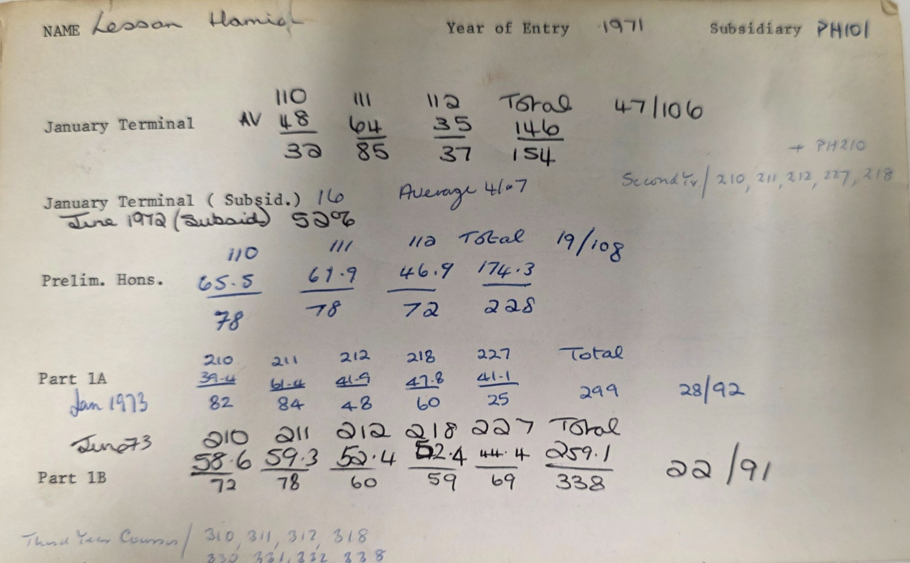
خوشبختانه آرشیو کتابخانۀ منچستر کتابهای راهنمای هر سال تحصیلی را حفظ کرده است؛ کتابهایی که کد و نام درسها و مدرسان آنها را ثبت کردهاند. با کمک این کتابها میتوان کدهای پشت کارت را یکییکی رمزگشایی و برنامۀ تحصیلی حمید را بازسازی کرد.
آنالیز، جبر، توپولوژی، آنالیز تابعی، نظریۀ گالوا و فرایندهای تصادفی در فهرست درسهای او دیده میشوند. نمرهها و رتبههای ثبتشده روی کارت نشان میدهند که حمید، با وجود فرازونشیبهایی در بعضی درسها، در مجموع از دانشجویان خوب دوره بوده است.
اما چیزی که حضوری کاملاً پررنگ و چشمگیر در پروندۀ او دارد، منطق ریاضی است. این مسیر در سال نخست با درس فرعی PH101: Logic آغاز میشود. در سال دوم، MT218: Mathematical Logic و درس فلسفۀ ریاضی با کد PH210 را میگیرد و در سال سوم نیز دو درس دیگر در منطق ریاضی انتخاب میکند.
به نظر میرسد یک نام در این علاقۀ روزافزون به منطق نقشی مهمتر از دیگران داشته است: جورج ویلمرز.
نام ویلمرز در تمام سالهایی که حمید در دورۀ کارشناسی دانشگاه منچستر بود، در فهرست مدرسان دانشکده دیده میشود. نکتۀ جالب اینکه در کتابهای راهنمای آن سالها، مقابل نام او فقط مدرک کارشناسی دانشگاه آکسفورد ثبت شده است، نه دکتری. ویلمرز دکتری خود را در سال ۱۹۷۵ گرفت؛ یعنی زمانی که حمید دورۀ کارشناسی ارشد خود را به پایان میرساند.
طبق کتاب فارغالتحصیلان دانشکده، حمید در سال ۱۹۷۴ کارشناسی و در سال ۱۹۷۶ کارشناسی ارشد گرفت. در آن زمان، جف پاریس در گروه منطق چهرهای تثبیتشدهتر و در سطح بینالمللی شناختهشدهتر بود. بااینحال، حمید برای دورۀ دکتری جورج ویلمرز را انتخاب کرد؛ کسی که تنها یک سال از گرفتن دکتری خودش میگذشت.
به نظر میرسد جورج برای حمید نهفقط یک استاد، بلکه یک دوست نیز بود. هرچه بود، این انتخاب درست از آب درآمد: حمید استقلال فکری خود را حفظ کرد و تنها دو سال پس از پایان دورۀ کارشناسی ارشد، رسالۀ دکتریاش را به پایان رساند.
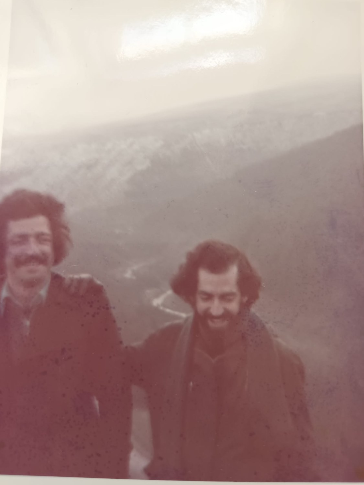
لیندا
حمید و لیندا در تابستانی که حمید دورۀ لیسانس خود را تمام کرده بود، در یک مهمانی با یکدیگر آشنا شدند. لیندا در آن زمان در بخش اداری دانشکدۀ ریاضی دانشگاه منچستر کار میکرد. آنها دو سال بعد، در سال ۱۳۵۵، در شروع دورۀ دکتری حمید، رسماً ازدواج کردند.
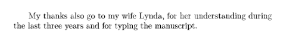
هر کسی که دورۀ دکتری را گذرانده باشد میداند این تشکر تا چه اندازه لازم و بایسته است؛ بهخصوص آنکه دختر کوچک آنها، سارا، نیز در پرفشارترین زمان این دوره، یعنی نوشتن پایاننامه، به دنیا آمد و انجام دکتری برای حمید، بدون همراهی و کمک لیندا، شاید ناممکن میشد.
حمید در بهار ۱۳۵۷ دکتری خود را به پایان رساند و همراه لیندا و سارا، که هنوز یک سالش هم نشده بود، به ایران بازگشت.
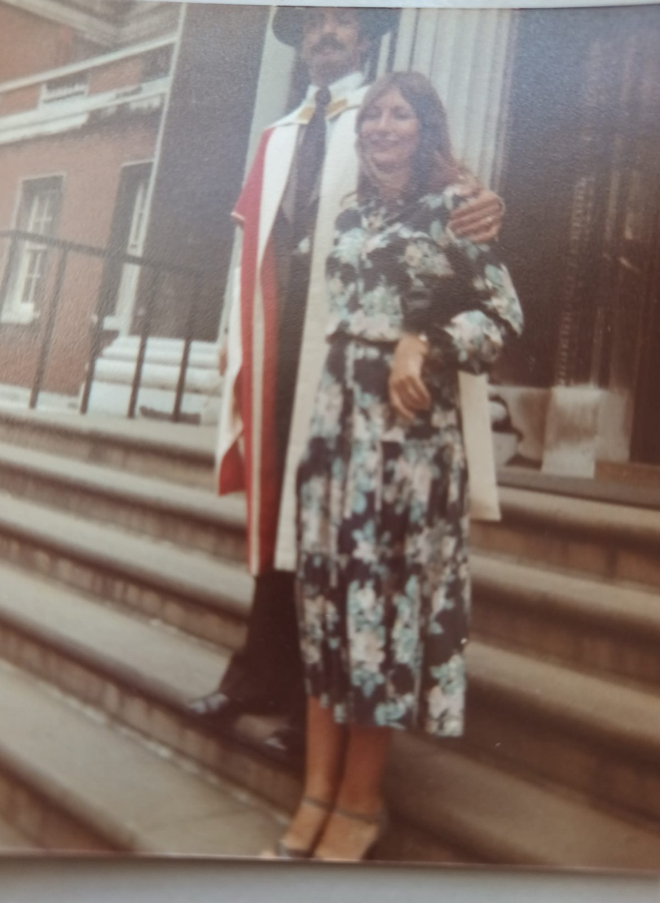
ایران تا جنگ با عراق
حمید و خانوادۀ کوچکش به ایران بازگشتند؛ ایرانی که از مردم کوچه و خیابان تا آدمهای دانشگاه هنوز مست شور انقلاب بودند و همه میخواستند همهچیز را تغییر دهند.
در معرفی «سمینار فلسفه، منطق و روششناسی ریاضی» که به نظر میرسد غلامرضا خسروشاهی برای مجلۀ هدهد فرستاده باشد، این درآمیختگی علم و انقلاب بهوضوح دیده میشود («سمینار فلسفه، منطق و روششناسی ریاضی»، هدهد، ۱۳۶۰).
از یک سو، سمینار بر آن بود که:
«با یک نگرش تاریخی ـ فلسفی در ریاضیات و روششناسی آن، به جریان ریاضی موجود در کشور غنا بخشد.»
و از سوی دیگر، اعلام میکرد:
«ثمرۀ انقلاب بزرگ و دورانساز ایران باید در زمینههای علمی از شکوفایی ویژهای برخوردار باشد و آن سنتهای دیرینه که در تاریخ و فرهنگ مستغنی این مرزوبوم وجود دارد، در این زمانه با باروری و گسترش بیشتری به بشریت عرضه گردد.»
این تلاش برای عرضۀ سنتهای دیرینۀ علمی ایران به بشریت در حالی انجام میگرفت که دانشگاهها در بهار ۱۳۵۹ تعطیل شده بودند و خود سمینار نیز دربهدرِ محلی برای برگزاری جلساتش بود. سیاوش شهشهانی به یاد میآورد:
«ما جای ثابتی نداشتیم. جلسات اول در همان نزدیکی ساختمان آ.اس.پ برگزار میشد، همانجا که الان پژوهشگاه علوم انسانی است. بعداً سرگردان بودیم...»
شهشهانی، مصاحبۀ تاریخ شفاهی، ص. ۸بستهشدن دانشگاهها برای کسانی که استخدام رسمی داشتند، هرچه بود، لزوماً به معنای قطع حقوق و از دسترفتن شغل نبود. آنها دستکم امنیت استخدامی و درآمد خود را حفظ میکردند، حتی اگر جایی برای تدریس نداشتند. اما برای کسانی که با قراردادهای موقت و پیمانی کار میکردند، تعطیلی دانشگاه میتوانست به معنای ازدستدادن همزمان کار و درآمد باشد.
حمید در دانشگاه ملی ایران استخدام پیمانی بود، و در این وضع تنها نبود: به گفتۀ سیاوش شهشهانی، چهار نفر در چنین شرایطی بودند و هر چهار نفر سرنوشتی مشابه یافتند. سید عبادالله محمودیان، ریاضیدانی که بعدها استاد دانشکدۀ ریاضی دانشگاه صنعتی شریف شد، یکی از آن چهار نفر بود؛ قرارداد او هم مانند حمید در همان سال تمدید نشد. بنا بر روایت شهشهانی، پس از بخشنامهای که استخدامهای جدید در دانشگاهها را ممنوع میکرد، قرارداد کسانی که استخدام پیمانی داشتند پس از پایان مدت تمدید نشد. در نتیجه، حمید نه اخراج سیاسی شد و نه رسماً از دانشگاه تصفیه شد؛ قرارداد موقت او به پایان رسید و دیگر تمدید نشد (مکاتبۀ شخصی نویسنده با سیاوش شهشهانی).
در این اوضاع، حمید میتوانست همچنان از طریق سمینار سهشنبهها برای خود خوراک فکری فراهم کند؛ و چنین نیز کرد. در همان سال نخست، سه سخنرانی از او در برنامۀ سمینار دیده میشود: دو جلسه با عنوان «بینهایت در منطق ریاضی» و یک جلسه با عنوان «قضیۀ گودل و تأثیر آن بر فلسفۀ ریاضی» (هدهد، ۱۳۶۰).
سمینار همان فضایی بود که تعطیلی دانشگاه از او گرفته بود: جایی برای اندیشیدن، سخنگفتن و شنیدن. اما خوراک فکری برای خانوادۀ کوچک او نان و آب نمیشد.
در ۳۱ شهریور همان سال، عراق به ایران حمله کرد و جنگ آغاز شد. مسئلۀ تعطیلی دانشگاهها و اینکه امثال حمید کار داشتند یا نداشتند، در برابر بحران تازه به حاشیه رانده شد. در منطق رسمی آن روزگار، اکنون مسئله حفظ انقلاب اسلامی بود، نه لزوماً حفظ زندگی مردمی که باید در ایران میزیستند. در چنین وضعی بود که حمید، لیندا و دختر کوچکشان سارا دوباره راه انگلستان را در پیش گرفتند.
دوازده هزار پوند
حمید از ایرانی که جنگ تازه در آن آغاز شده بود، به انگلستانی بازگشت که در میانۀ رکود اقتصادی ۱۹۸۰–۱۹۸۱ قرار داشت؛ رکودی که فرصتهای شغلی را، بهویژه برای دانشگاهیان جوان، بهشدت محدود کرده بود.
اما بازگشت به انگلستان برای حمید فقط بازگشت به کشوری گرفتار رکود نبود. دولت ایران تحصیل هفتسالۀ او در انگلستان را با این شرط تأمین کرده بود که دستکم چهارده سال در ایران خدمت کند. این ایدۀ خدمت به اندازۀ دو برابر زمان تحصیل همچنان نیز برقرار است؛ این پرسش هم که اگر کاری برای خدمتکردن وجود نداشته باشد، فرد چگونه باید به تعهدش عمل کند، همچنان بیپاسخ مانده است. خروج دوبارۀ حمید از ایران، از نظر دولت، به معنای زیرپاگذاشتن این تعهد بود. ویلمرز مینویسد که پدر حمید به همین دلیل بازداشت شد و حمید ناچار شد برای آزادی او مبلغ دوازده هزار پوند قرض کند. خود ویلمرز این مبلغ را برای آن زمان «قابلتوجه» میخواند (ویلمرز، ۲۰۱۳، ص. ۳۶۲).
اگرچه روایت ویلمرز از حمید تقریباً در همۀ موارد با آنچه من از زندگی او یافتهام مطابقت دارد، در مورد بازداشت پدر حمید اشتباه کرده است. سازوکار بورس به این صورت بود ــ و تا آنجا که میدانم هنوز هم هست ــ که ملکی بهعنوان وثیقه گذاشته میشد. در این مورد، خانۀ حسین لسان، پدر حمید، در وثیقۀ سازمان بورسیهکننده بود و حمید برای آزادکردن خانه، بدهی بورس را تسویه کرد. این اطلاعات را از گفتوگوی شخصی با پسر یکی از برادران حمید دارم.
رقم دوازده هزار پوند، که احتمالاً مطابق روال چنین بورسهایی بازپرداخت مجموع شهریه و هزینۀ زندگی هفت سال تحصیل حمید در انگلستان بوده است، با هزینههای دانشجویی آن دوره سازگار به نظر میرسد. اما واژۀ «قابلتوجه» برای بازپرداخت یکجای آن در سال ۱۹۸۰، سنگینی واقعی مبلغ را بهخوبی نشان نمیدهد.
در ژانویۀ ۱۹۷۸، دو سال پیش از بازگشت حمید، حقوق آغازین یک مدرس دانشگاه در بریتانیا فقط ۳۳۳۳ پوند در سال بود. حتی بالاترین حقوق یک مدرس دانشگاه در اکتبر ۱۹۷۹، با محاسبه از آمار رسمی افزایش حقوق، حدود ۹۸۹۰ پوند در سال بود (هانسارد، ۱۳ ژانویۀ ۱۹۷۸؛ «حقوق مدرسان»، ۲۸ اکتبر ۱۹۸۵). بنابراین بدهی دوازده هزار پوندی حمید از کل حقوق ناخالص یک سالِ کسی که در بالاترین نقطۀ مقیاس مدرسی دانشگاه قرار داشت نیز بیشتر بود؛ چه رسد به حقوق یک مدرس تازهاستخدامشده. این مبلغ باید از درآمدی پرداخت میشد که پیش از آن مالیات، بیمه، اجاره و هزینههای زندگی خانواده نیز از آن کم میشد.
تازه مسئله فقط پایینبودن حقوق نبود؛ شغلی هم در کار نبود. بحران استخدام دانشگاهی پیش از بازگشت حمید آغاز شده بود. سپس رکود اقتصادی و کاهش بودجههای دانشگاهی از راه رسید. در سال ۱۹۸۱ دانشگاهها با کاهشهای سنگینی روبهرو شدند و فرصتهای دانشگاهی، بهویژه برای پژوهشگران جوان، نه در حال گسترش بلکه در حال ناپدیدشدن بود (هانسارد، «آموزش عالی»، ۸ ژوئیۀ ۱۹۸۱).
حمید در حدود بیستونهسالگی به انگلستان بازگشته بود: با دکتری منطق از منچستر، همسر و خانوادهای که در حال بزرگشدن بود، بدون شغل دانشگاهی و با بدهیای بیش از حقوق ناخالص سالانۀ یک مدرس باسابقۀ دانشگاه. حتی اگر همان موقع کاری دانشگاهی پیدا میکرد، پرداخت بدهی از حقوق دانشگاهی میتوانست سالها بخش بزرگی از درآمد قابلخرج خانواده را ببلعد.
ویلمرز، که در آن زمان مثل همیشه به حمید خیلی نزدیک بود، در توصیف وضع حمید مینویسد که ترکیب این بدهی تازه، کمبود مشاغل دانشگاهی و ضرورت تأمین زندگی خانواده به امید حمید برای ادامۀ یک مسیر دانشگاهی پایان داد. لیندا، همسر حمید، نیز این را تأیید میکند. او به من گفت:
«ویلمرز چند کار تدریس موقت دانشگاهی برای حمید پیدا کرد، ولی ما پول کافی برای زندگی نداشتیم.»
لیندا لسانصنعت، و بهخصوص دنیای در حال گسترش رایانه و نرمافزار، دستکم امکان کار و درآمدی را پیش روی او میگذاشت که دانشگاه نمیتوانست فراهم کند. شاید از بیرون چنین به نظر برسد که حمید منطق را رها کرد و به سراغ رایانه رفت؛ اما از درون زندگی او، این تغییر مسیر احتمالاً نام دیگری داشت: تأمین زندگی خانواده.
شیرینگ
نخستین کار حمید پس از فاصلهگرفتن از دانشگاه، در مرکز پژوهشی استیال در هارلو بود. محل کارش بهنوعی محل زندگی خانواده را نیز تعیین کرد: شیرینگ، دهکدهای در حدود پنج کیلومتری شمال شرقی هارلو. حمید پس از هارلو چند بار شغلش را عوض کرد و بعضی از محلهای کار بعدیاش فاصلۀ زیادی با شیرینگ داشتند؛ اما شیرینگ تا پایان عمر (۹ شهریور ۱۳۸۵) خانۀ او و خانوادهاش ماند؛ تجربهای از ثبات که خود او در کودکی و نوجوانی نکرده بود. لیلا، دومین دختر حمید و لیندا، در سال ۱۹۸۳ (۱۳۶۲) آنجا به دنیا آمد و لیندا هنوز در همان دهکده زندگی میکند (گفتوگو و مکاتبۀ شخصی نویسنده با لیندا لسان).
برای اهالی شیرینگ، حمید مردی آرام و دوستداشتنی بود؛ عاشق موسیقی کلاسیک و گلکاری در باغچۀ کوچک خانهشان، و یکی از چهرههای همیشگی مراسم و فعالیتهای اجتماعی دهکده — مهمترینشان جشن سالیانۀ گل، جشنی که در تابستان ۲۰۰۶ بدون حضور او و با خاطرۀ او برگزار شد (اخبار شیرینگ، دسامبر ۲۰۰۶). مهمتر از همه، حمید دوستی بیمانند بود. یکی از زیباترین تصویرهای این دوستی را پسر ران اینسورث در مراسم خاکسپاری پدرش ترسیم میکند. او میگوید ران چند سال پیش در همان مکان، در مراسم خاکسپاری دوست بزرگش حمید، سخن گفته بود؛ دوستی که او و تمام اعضای خانواده هنوز دلتنگش بودند. هنگامی که پسرش به او گفته بود که میخواهد در مراسم خاکسپاریاش سخن بگوید، ران فقط یک خواسته داشت: «مرا کنار حمید بگذارید.» اکنون خانواده گرد آمده بودند تا به این خواسته احترام بگذارند و او را کنار دوستش به خاک بسپارند (متن سخنرانی پسر ران اینسورث در مراسم خاکسپاری پدرش؛ نسخه در اختیار نویسنده).
پسر ران سپس خاطرهای از دوستی این دو تعریف میکند. ران در حل جدول کلمات متقاطع بسیار سریع بود، اما اصرار داشت هرکس پیش از خواندن یک سرنخ، ابتدا تعداد حروف پاسخ و سپس حروفی را که تا آن لحظه پیدا کرده بود به او بگوید.
حمید اغلب عصرها با ران به پیادهروی میرفت. همچنین در قطارِ بازگشت از کار، گاه بخشی از جدول روزنامۀ گاردین را حل کرده بود و برای تکمیل بقیۀ آن از ران کمک میخواست؛ اما هیچوقت به یاد نمیآورد که سرنخ را باید چگونه برای او بخواند.
یک بار در میان پیادهروی رو به ران کرد و گفت:
«دختر زیبا در گل سرخِ زرشکی.»
ران پرسید:
«چند حرف؟»
کمی بعد حمید دوباره گفت:
«غزال در چین شرقی.»
ران با صدایی بلندتر پرسید:
«چند حرف؟»
چند دقیقه بعد حمید سرنخ دیگری خواند:
«نامهرسان با کیسهای بزرگ از راه میرسد.»
این بار ران با درماندگی تحملناپذیری فریاد زد:
«چند حرف؟»
حمید دستهایش را به هوا برد و گفت:
«خیلی زیاد! یک عالمه حرف!»
اما در دل این حمید، مرد مهربان و بیهیاهوی دهکده، همان منطقدان همچنان زنده بود. او دیگر در دانشگاه کار نمیکرد، اما علایق فکریاش را، بهطور نامحسوس برای یک ناظر بیرونی، در دل کارهای فنی خود دنبال میکرد.
حمید، حمید ماند
وقتی یادداشت ویلمرز دربارۀ حمید را میخوانیم، ممکن است چنین به نظر برسد که او منطق را رها کرد و به دنیای نرمافزار و سامانههای ایمنیحیاتی رفت؛ دنیای پروژههای عظیمی مانند خط ریلی تونل مانش و هواپیماهای ایرباس که امروز چنان به بخشی عادی از زندگی در اروپا تبدیل شدهاند که کمتر کسی به نرمافزارها، محاسبات و نظامهای پیچیدۀ ایمنی در پشت آنها فکر میکند. حمید در پروژههایی از این دست درگیر بود. اما او آدمی معمولی نبود و مرز میان این جهان و دنیای منطق، برایش به آن روشنی که از بیرون به نظر میرسد وجود نداشت.
نایجل سیل، همکار حمید در هارلو، دربارۀ راه ورود او به برنامهنویسی مینویسد (سیل، ۲۰۰۸):
«او منطقدان بود و تنها کسی که در تمام عمرم دیدم که به من گفت راه ورودش به برنامهنویسی از حساب لامبدا گذشته است. گمان میکنم از نظر او فهم برنامهنویسی از هیچ راه دیگری ممکن نبود!»
سیل او را چنین توصیف میکند:
«حمید آدمی بیهیاهو بود: آرام، صمیمی، یاریرسان و بسیار دانشآموخته؛ کسی که انگار بیشتر زندگیاش را در فضاهای انتزاعی میگذراند و تمام "زندگی واقعی" از صافی آن فضاها میگذشت.»
هرچند نایجل سیل دربارۀ ساواک اشتباه کرده بود، این توصیفش از حمید بسیار دقیق به نظر میرسد. در حقیقت، همۀ کارهای ظاهراً متفاوتی که حمید انجام داد، نقطهای مشترک داشتند: زبان.
در رسالۀ دکتری حمید، مسئلۀ زبان در انتزاعیترین صورت خود ظاهر شده بود: در یک مدل حساب چه چیزهایی را میتوان تعریف کرد و زبان چه بخشهایی از ساختار آن مدل را آشکار یا پنهان میکند؟ وقتی حمید به برنامهنویسی، پردازش زبان طبیعی و سپس روشهای صوری در مهندسی نرمافزار روی آورد، موضوع کارش تغییر کرد، اما دلمشغولی اصلیاش نه. مسئله همچنان این بود که چگونه میتوان معنا، ساختار و مقصود را در قالب زبانی دقیق بیان کرد.
یکی از روشنترین نمونههای این پیوستگی، پروژۀ اروپایی RAISE بود؛ کوتاهشدۀ Rigorous Approach to Industrial Software Engineering، یعنی «رویکردی دقیق به مهندسی نرمافزار صنعتی». حمید در این پروژه روی ابزارهایی برای پشتیبانی از مشخصسازی و توسعۀ صوری نرمافزار کار میکرد؛ کاری که شاید از نظریترین کارهایی بود که میشد در دل صنعت انجام داد (لسان و سیل، ۱۹۹۰، معرفی نویسندگان؛ RAISE Language Group، ۱۹۹۲؛ George و همکاران، ۱۹۹۵).
هدف RAISE این بود که در نرمافزارهای بزرگ و حساس، ایمنی فقط به تجربه و آزمایش واگذار نشود؛ زیرا بعضی خطرها را اصلاً نمیتوان در جهان واقعی آزمود. نمیتوان برای اطمینان از یک سامانۀ راهآهن، دو قطار را در معرض تصادف قرار داد. باید رفتار سامانه و وضعیتهای خطرناک به زبانی ریاضی تعریف میشد و سپس اثبات میشد که طراحی نرمافزار به آن وضعیتها نمیانجامد. RAISE زبان، روش و ابزارهای لازم برای این کار را فراهم میکرد. اینجا بود که منطق حمید مستقیماً به صنعت راه پیدا میکرد.
به یک معنا، حمید هیچگاه از مسئلهای که در رسالهاش دنبال کرده بود جدا نشد؛ هرچند برای منطقدانانی که فقط رد مقالههای دانشگاهی او را دنبال میکردند، دیدن این استمرار آسان نبود. حتی هنگامی که رسالهاش، بیش از سه دهه پس از نوشتهشدن، سرانجام منتشر شد، طبیعی بود که کار او فقط از زاویۀ منطق ریاضی دیده شود. رد این بخش از زندگی علمی حمید را هنوز میتوان در ارجاعهای گوگل اسکالر دنبال کرد.
شرح گذشته و آیندۀ رسالۀ حمید را به منطقدانان میسپارم که امیدوارم دعوت مرا بپذیرند و با زبانی ساده دربارۀ آن بنویسند و چراغی برای علاقهمندان به منطق ــ یا حتی آنها که هنوز نمیدانند به منطق علاقهمندند ــ روشن کنند. علی عنایت، از منطقدانان نسل بعد از حمید، در مورد رسالۀ لسان برای من نوشت:
«گمان میکنم بهراحتی دو یا سه مقالۀ ناب از رسالۀ لسان میتوان بیرون کشید.»
علی عنایت؛ پیوست ۳حمید تا پایان دکتریِ منطق، فامیل خود به انگلیسی را با دو اس (Lessan) و بعد از جداشدن از منطق فقط با یک اس (Lesan) مینوشت. اما او نمیتوانست از خودش بگریزد و هر جا که بود و هر کاری که میکرد، پرسشهای اساسیاش در مورد زبان را به شکلی تازه دنبال میکرد. یکی از خواندنیترین، مستقیمترین و حتی امروز پرسشبرانگیزترین نمونهها، مقالهای است که در آغاز فعالیتهای فنیاش با نایجل سیل نوشت.
آیا این گفتوگوست؟
حمید و نایجل سیل در مقالۀ «یک رابط گفتوگویی برای سامانۀ ارضای قیود»، که در سال ۱۹۹۰ منتشر شد، سامانهای برای کمک به برنامهریزی پروژه را شرح میدهند. کاربر و ماشین بهنوبت جملههایی تولید میکردند: سؤال میپرسیدند، پاسخ میدادند، چیزی را پیشنهاد میکردند یا از طرف مقابل میخواستند کاری انجام دهد. از بیرون، همهچیز به یک گفتوگوی واقعی شباهت داشت (Lesan & Seel، ۱۹۹۰، صص. ۸۲–۹۱).
اما آنها لحظهای تأمل میکنند ــ سخت میتوان تصور کرد که این تأمل کار حمید نبوده باشد ــ و میپرسند: آیا این واقعاً گفتوگوست؟
برای پاسخ به این پرسش، به نظریۀ پل گرایس، فیلسوف زبان، رجوع میکنند. از نظر گرایس، معنای یک سخن فقط در کلماتی که گفته میشوند نیست؛ گوینده با گفتن آن کلمات قصدی دارد و انتظار دارد شنونده آن قصد را تشخیص دهد. در یک گفتوگوی واقعی، هر طرف پیوسته میکوشد بفهمد دیگری چه میداند، چه میخواهد و چرا این جمله را گفته است. پاسخ او نیز بر اساس همین برداشتی شکل میگیرد که از ذهن و قصد طرف مقابل پیدا کرده است (Grice، ۱۹۵۷ و ۱۹۶۹؛ Searle، ۱۹۶۹). سامانۀ حمید چنین کاری نمیکرد. طراحان از پیش حدس زده بودند که کاربر در هر مرحله چه میداند و چه میخواهد؛ ماشین در هنگام تعامل قصد کاربر را کشف نمیکرد. حمید و سیل این تصور را که میتوان همۀ قصدهای ممکن کاربر را هنگام طراحی سامانه پیشبینی کرد، در بهترین حالت فرضی خام میدانستند. آنچه به نظر گفتوگو میرسید، شاید گفتوگونمایی بیش نبود.
سامانۀ حمید از جملههای ازپیشساختهشده استفاده میکرد. مدلهای زبانی بزرگ امروز چنین محدودیتی ندارند: جملهها را همان لحظه تولید میکنند و میتوانند پاسخهایی آزاد و روان بسازند. اما آزادی در تولید جمله، خودبهخود مسئلۀ قصد را حل نمیکند.
فرض کنید من از یک مدل زبانی بخواهم:
«مقالۀ حمید را به مدلهای زبانی بزرگ ربط بده.»
مدل میتواند فوراً متنی روان و مرتبط تولید کند. اما از این جمله بهتنهایی معلوم نیست قصد من چیست. شاید میخواهم نشان دهم حمید آینده را پیشبینی کرده بود؛ شاید میخواهم مدلهای زبانی را نقد کنم؛ شاید هدفم توضیح تفاوت میان زبان و فهم است؛ و شاید فقط در جستوجوی راهی برای ادامهدادن داستان زندگی حمیدم. هر یک از این قصدها پاسخ متفاوتی میطلبد.
اگر مدل، بدون آنکه قصد مرا دریابد یا دربارهاش پرسشی مطرح کند، یکی از این راهها را انتخاب کند، ممکن است پاسخ آن به نظر مرتبط، ولی درعینحال فرسنگها دور از چیزی باشد که من میخواستم. جملههای ما به هم مربوطاند، اما آیا واقعاً با یکدیگر گفتوگو کردهایم؟
بنابراین، دفعۀ بعد که از یک مدل زبانی چیزی خواستید و با دیدن آنچه تولید کرده است، دستهایتان را به سبک حمید لسان در برابر درخواستهای مکرر دوستش برای تعداد حروف بالا بردید و پرسیدید: «اصلاً فهمیدی من چه میخواستم؟»، پرسش او را به یاد بیاورید: آیا این از همان آغاز گفتوگو بود؟ و آیا حق داشتید انتظار داشته باشید مدل بداند قصد شما چه بوده و واقعاً در پی چه چیزی بودهاید؟
منابع و اسناد
- دهباشی، علی. «یاد و یادبودها: مرگ یک استاد (دکتر حسین لسان)». کلک، شمارۀ ۱۰، دی ۱۳۶۹.
- شیخالاسلامی، علی. «ستیز برخی روحانیون با مولوی و حافظ در چه ریشه دارد؟» خبرآنلاین.
- اطلاعات. ضمیمۀ شمارۀ ۱۲۹۸۶، یکشنبه ۱۶ شهریور ۱۳۴۸: «اسامی کلیۀ قبولشدگان کنکور سراسری».
- Seel, Nigel. “Dr Hamid Lesan.” Wading Through Treacle (Interweave Consulting), 15 January 2008.
- Wilmers, George. “Hamid Lesan (1951–2006).” Manchester, March 2013, in New Studies in Weak Arithmetics (2013), pp. 361–362.
- Lessan, Hamid. Models of Arithmetic. PhD thesis, University of Manchester, 1978; especially the acknowledgements.
- بازچاپ کامل رسالۀ لسان (صص ۳۵۹–۴۱۷) در مجموعۀ زیر؛ تایپ دوبارۀ رساله حاصل اخلاص کستاس دیمیتراکوپولوس، استاد منطق دانشگاه آتن و همکلاس لسان در منچستر، است: Cégielski, Patrick, Charalampos Cornaros, and Costas Dimitracopoulos, eds. New Studies in Weak Arithmetics. CSLI Lecture Notes 211. Stanford, CA: CSLI Publications; Créteil: Presses Universitaires du Pôle de Recherche et d'Enseignement Supérieur Paris-Est, 2013. xiv+448 pp.
- دانشگاه منچستر، آرشیو دانشگاه؛ پرونده و مکاتبات مربوط به سوابق تحصیلی حمید لسان.
- «سمینار فلسفه، منطق و روششناسی ریاضی». هدهد، سال سوم، شمارۀ ۱، خرداد ۱۳۶۰.
- شهشهانی، سیاوش. مصاحبۀ تاریخ شفاهی ریاضی ایران؛ روایت مربوط به سمینارهای سهشنبه، ص. ۸. انجمن ریاضی ایران.
- «حسین ضیایی (۱۳۹۰–۱۳۲۳)» و «حمید لسان (۱۳۸۵–۱۳۳۰)». خبرنامۀ آیپیام، شمارههای پیاپی ۹۰ و ۹۱، پاییز و زمستان ۱۳۹۷.
- گفتوگو و مکاتبۀ شخصی نویسنده با لیندا لسان؛ از جمله دربارۀ دشواری تأمین معاش و کارهای موقت دانشگاهی حمید پس از بازگشت به انگلستان، زندگی خانواده در شیرینگ و روابط محلی حمید.
- مکاتبۀ شخصی نویسنده با سیاوش شهشهانی.
- گفتوگو و مکاتبۀ شخصی نویسنده با اعضای خانوادۀ حمید لسان در ایران؛ از جمله پسر یکی از برادران حمید، دربارۀ مدرسههای حمید، نشانی میدان گرگان، وثیقۀ خانۀ حسین لسان و تسویۀ بدهی بورس.
- Office for National Statistics. “GDP and events in history: how the COVID-19 pandemic shocked the UK economy.” 24 May 2022.
- UK Parliament, House of Commons. “Universities (Financial Situation).” Hansard, 13 January 1978.
- UK Parliament. “Lecturers’ Pay.” Written Answers, 28 October 1985.
- UK Parliament, House of Commons. “Higher Education.” Hansard, 8 July 1981.
- UK Parliament. “Student Grants.” Written Answers, 1 February 1982.
- UK Parliament, House of Lords. “Overseas Students’ Fees.” Hansard, 21 January 1976.
- عنایت، علی. یادداشت دربارۀ حمید لسان و رسالۀ دکتری او؛ پیوست ۳ همین نوشته.
- اخبار شیرینگ (Sheering News)، دسامبر ۲۰۰۶؛ گزارش جشن سالیانۀ گل دهکده.
- متن سخنرانی پسر ران اینسورث در مراسم خاکسپاری پدرش؛ نسخۀ در اختیار نویسنده.
- George, Chris, Peter Haff, Klaus Havelund, Anne Haxthausen, Robert Milne, Claus Bendix Nielsen, Søren Prehn, and Kim Ritter Wagner. The RAISE Development Method. Prentice Hall, 1995.
- RAISE Language Group. The RAISE Specification Language. Prentice Hall, 1992.
- Searle, John R. Speech Acts: An Essay in the Philosophy of Language. Cambridge University Press, 1969.
- Grice, H. P. “Utterer’s Meaning and Intentions.” The Philosophical Review (April 1969).
- Grice, H. P. “Meaning.” The Philosophical Review 66 (1957): 377–388.
- Lesan, Hamid, and N. R. Seel. “A Conversational Interface to a Constraint-Satisfaction System.” ICL Technical Journal 7, no. 1 (May 1990): 82–91.
- پسران، محمدهاشم. زندگینامه و سوابق دانشگاهی؛ از جمله دورۀ کارشناسی اقتصاد و آمار در دانشگاه سالفورد.
- لسان، حسین. «قربانی، از روزگار کهن تا امروز: روایات دینی مراسم قربانی در میان ملل و اقوام باستانی»؛ و «شاهنامه، حماسهای برتر از ایلیاد». یغما و هنر و مردم.
- آزاد ارمکی، تقی. سرگذشت من، جلد اول: ۱۳۳۶–۱۳۸۳. ۱۳۹۹.
پیوست ۱: نوشتۀ جورج ویلمرز
Hamid Lesan (1951–2006)، جورج ویلمرز، منچستر، مارس ۲۰۱۳
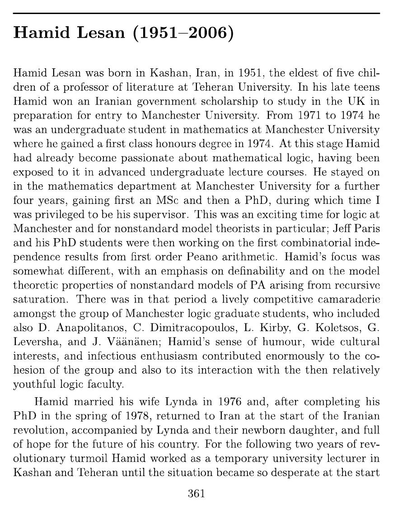
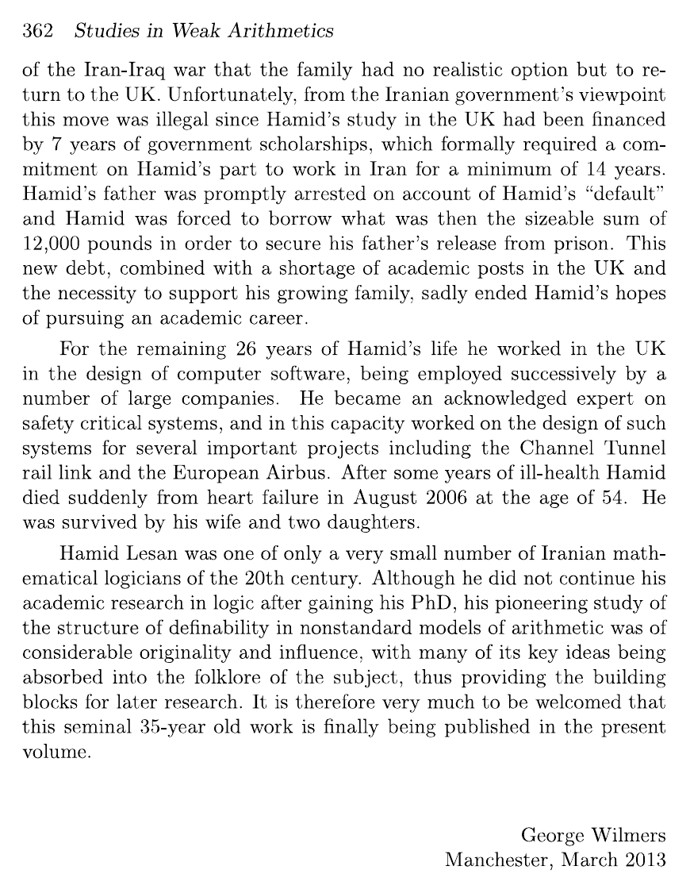
پیوست ۲: متن خبرنامۀ آیپیام
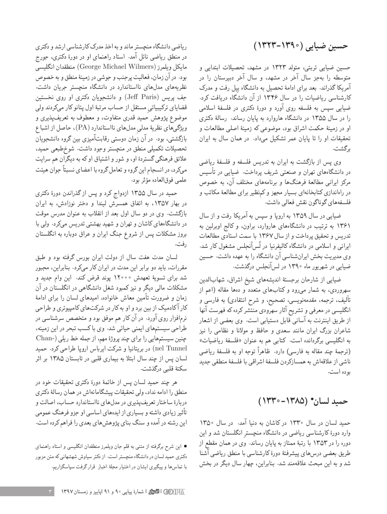
پیوست ۳: یادداشت علی عنایت
نام حمید لسان را نخستینبار، چهلواندی سال پیش، در دورانی که دانشجوی دورۀ دکترای ریاضی در دانشگاه ویسکانسین بودم، در مقالهای به قلم منطقدان مشهور، کریگ اِسمُرینسکی، دیدم؛ مقالهای دربارۀ مدلهای نااستاندارد حساب پئانو که اشارات متعددی به قضایای لسان در رسالۀ دکتریاش داشت.
گمان میکنم بهراحتی دو یا سه مقالۀ ناب از رسالۀ لسان میتوان بیرون کشید، ولی حیف که جبر روزگار این فرصت را به او نداد. خوشبختانه رسالۀ لسان آرامآرام در میان پژوهشگران دستبهدست گشت و خوانندۀ خود را یافت، گرچه در شماری اندک و گزیده.
تنها تماسی که من با لسان داشتم از راه نامه بود: حدود چهل سال پیش، به بهانۀ خواندن مقالۀ اِسمُرینسکی، نامهای به او نوشتم ــ نمیدانم نشانیاش را در انگلستان چگونه پیدا کرده بودم ــ و در اندک مدتی پاسخ گرم او را دریافت کردم. در آن نامه گفته بود زندگی دانشگاهی را برای همیشه کنار گذاشته است و اشارهای مبهم به علت آن کرده بود. بعدها که از این و آن دربارۀ تجربههای تلخ او و خانوادهاش در ایران پس از انقلاب بیشتر شنیدم، درک بهتری از اجبار او به ترک دانشگاه پیدا کردم.
این را هم اضافه کنم که سالها، هر وقت در کنفرانسی در منطق در اروپا یا انگلستان شرکت میکردم و ایرانیبودنم روشن میشد، با هیجان از من میپرسیدند: «آیا حمید لسان را میشناسی؟» تو خود حدیث مفصل بخوان از این مجمل.
نوشتۀ امیر اصغری، با کمکِ خانوادۀ حمید لسان در ایران، لیندا لسان، سیاوش شهشهانی و آرشیو دانشگاه منچستر. تعاملیِ بخشِ «آیا این گفتوگوست؟» افزودۀ مجله است و بر پایۀ سازوکار توصیفشده در مقالۀ لسان و سیل (۱۹۹۰) ساخته شده است.